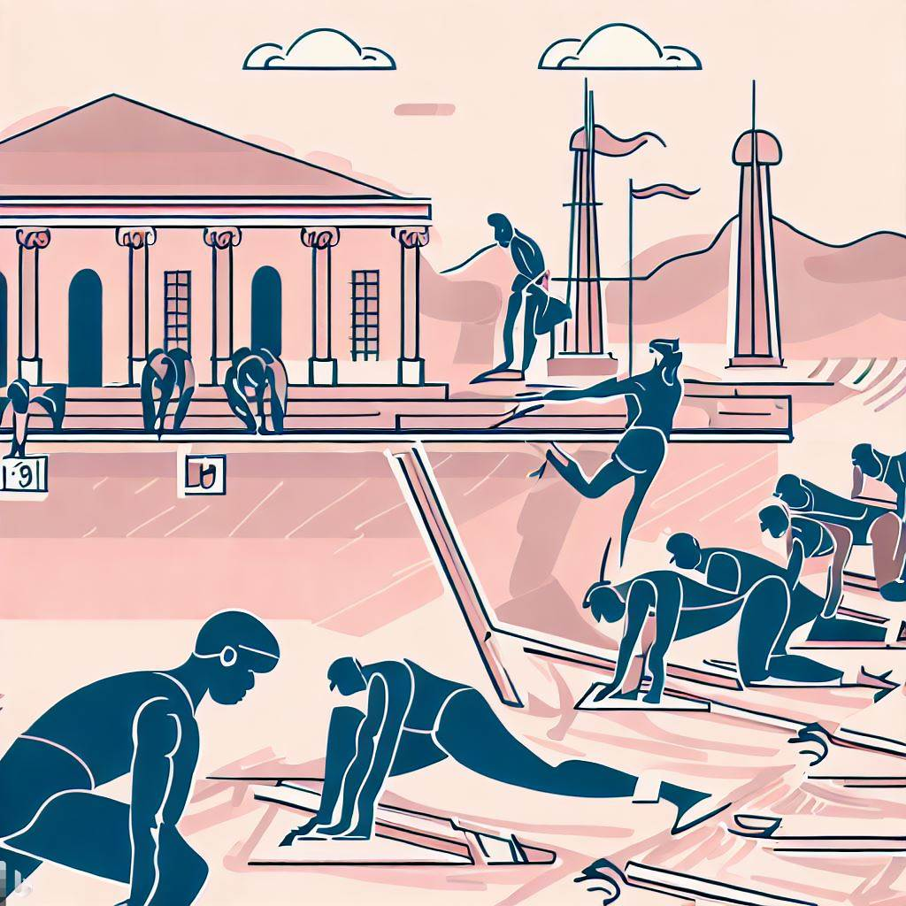

In ancient Greece, preparing for the Olympics was a rigorous and all-consuming process for both athletes and their trainers. Competitors, all of whom were male, dedicated ten months to training, often rendering it difficult to hold a full-time job. Their days consisted of visiting the gymnasium, where they would perform sport-specific exercises under the watchful eye of a coach. These coaches, revered figures in society, were responsible for an athlete's performance, diet, hygiene, and physical therapy. With no team games or consolation prizes, the ancient Olympics focused solely on victory, bringing honor, fame, and fortune to both the athlete and his coach. To ensure success, trainers employed various motivational techniques, highlighting the critical role of training in achieving athletic excellence.
The Games showcased several different disciplines, including running, jumping, throwing, boxing, wrestling, and equestrian events. These disciplines were meant to test the physical abilities and skills of the participants, and winning was considered a great honour that brought immense fame into the competitor's life. The ancient Olympic Games were a celebration of athleticism and human potential, and the disciplines reflected the values, priorities and ideals of the ancient Greek society. While some of the disciplines have evolved to their modern versions or have been replaced over time, the legacy of the ancient Olympic Games continues to inspire athletes and sports enthusiasts around the world.
In ancient Greek Olympic games, athletes competed in running events on a hard-packed clay track while barefoot and dressed in only a loin cloth. The three main events included the Stade race, a prestigious 200-meter sprint along the Olympia track; the Diaulos, a 400-meter foot race equivalent to the modern 400-meter race but without starting blocks or specialized running shoes; and the Dolichos, a long-distance race ranging from 7 to 24 stades (approximately 1,400 to 4,800 meters), with no set distances or standardized track lengths.
In Ancient Greece, the jumping event was called the long jump, and it involved a running start, similar to the modern long jump. However, the use of halteres (stone or lead weights) was unique to the ancient version, as athletes held these weights during the jump and released them at the end to increase their distance. This technique is not used in today's long jump events.
The ancient discus throw was similar to the modern freestyle discus throw, with athletes spinning and releasing the discus to achieve maximum distance. However, the materials used for the discus were different, as it was originally crafted from stone and later from iron, lead, or bronze. Today, the discus is typically made of wood, metal, or other materials with a standard weight and size.
Ancient Greek wrestling, also known as pale, was more focused on grappling and submission holds than today's Olympic wrestling. The goal was to force an opponent to concede defeat, usually by making them touch the ground with their back, hips, or shoulders. Unlike modern wrestling, there were no points or weight classes in ancient Greek wrestling.
Ancient Greek boxing, called pygmachia, was a more brutal sport compared to modern boxing. Fighters wore himantes, straps made of soft leather that evolved into hard leather, which often caused severe injuries to opponents. There were no rounds, weight classes, or gloves, and matches continued until one of the fighters was no longer able to continue or conceded defeat.
Pankration was a no-holds-barred combat sport that combined elements of wrestling and boxing. It was more violent and less regulated than today's mixed martial arts (MMA), with few rules and no safety equipment. Biting and eye-gouging were the only prohibited actions in pankration, and matches continued until one fighter was incapacitated or surrendered.
Ancient Greek equestrian events, held in the Hippodrome, included horse racing and chariot racing, which were more dangerous and less regulated than modern equestrian competitions. Riders and charioteers often competed without saddles or other safety equipment, and races were highly competitive and sometimes lethal. Today's equestrian events focus on dressage, show jumping, and eventing, with extensive safety regulations and equipment.
The ancient Greek javelin event, akontia, featured athletes throwing a wooden spear with a metal tip from a standing position, relying on upper body strength. These javelins were often longer and heavier than today's versions and sometimes had a leather strap, or amentum, for increased distance and stability. Unlike modern events that focus solely on distance, ancient competitions also considered accuracy by awarding points based on proximity to a target.
· “History of the IOC.” International Olympic Committee, 15 Mar. 2023, olympics.com/ioc/ancient-olympic-games/the-sports-events.
· “Tell me about the Sports and Events at the Ancient Olympic Games” prompt. ChatGPT, 13 Feb. version, OpenAI, 28 May. 2023, chat.openai.com/chat.
· Voight, Heather. “Training for the Olympic Games in Ancient Greece.” Heather on History, 25 Sept. 2014, heathervoight.com/2012/05/22/training-for-the-olympic-games-in-ancient-greece.
· Belis, Alexis. “The Ancient Olympics and Other Athletic Games.” The Metropolitan Museum of Art, July 2021, www.metmuseum.org/perspectives/articles/2021/7/ancient-greek-olympic-games.